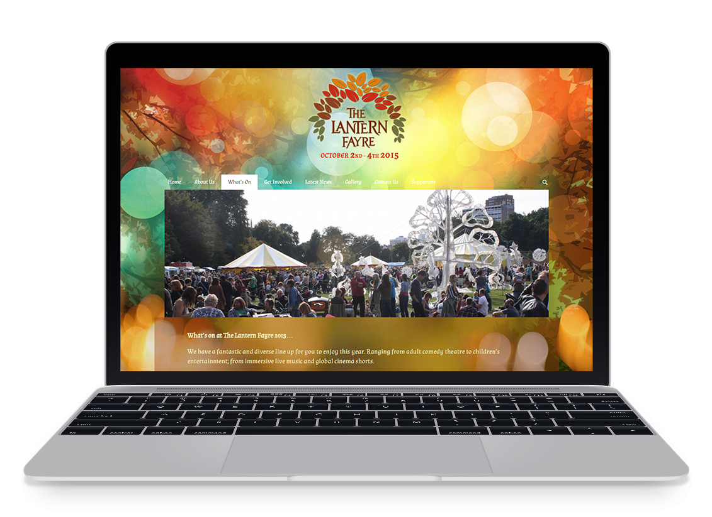

The Lantern Fayre Website

This the website I created for a local 3 day community festival.
I worked closely with Mat Cook, the director of the event, to create this website and make sure it met his specifications. Because of the tight time frame we had to build the website in (so it could be used for
fundraising bids) we decided to make use of WordPress as a framework to create the site. This also made sure he could easily update it himself as the event drew closer.
I used the Catch Responsive Theme as this was my client's prefered layout, but adapted it with a variety of plugins as well as custom CSS and HTML to make it more appropriate and unique.
Overall, the project was a success and was completed to Mat's standards within the given time.
Visit the Site